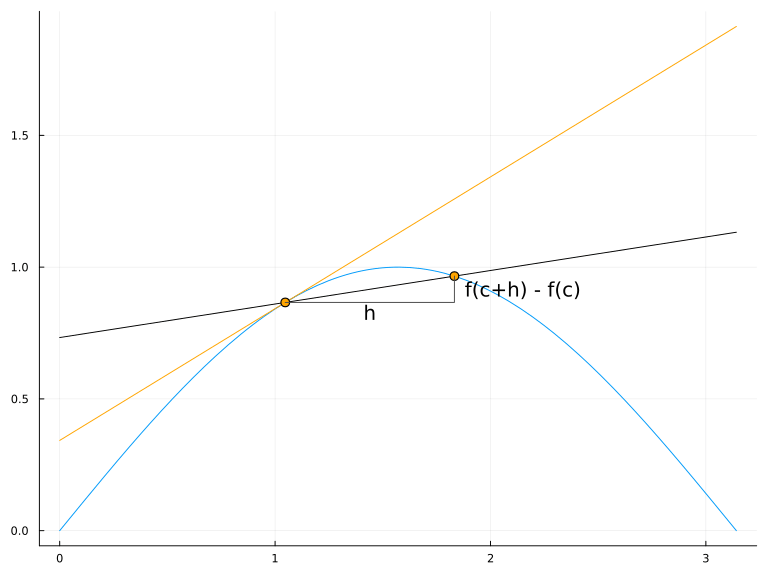
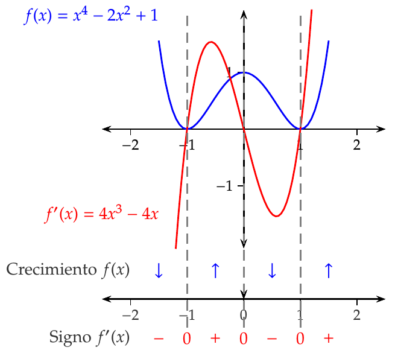
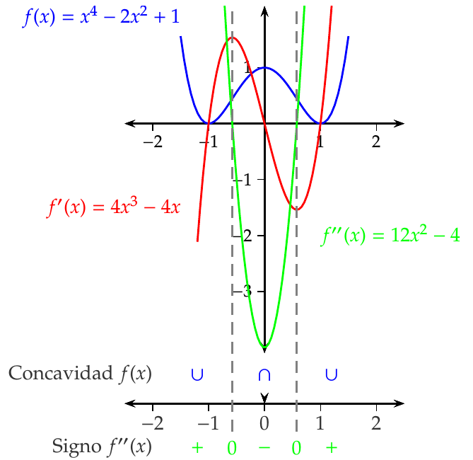
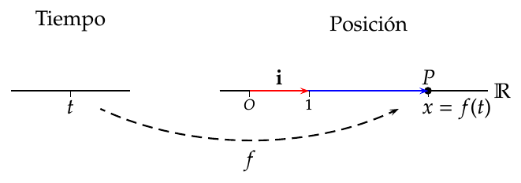
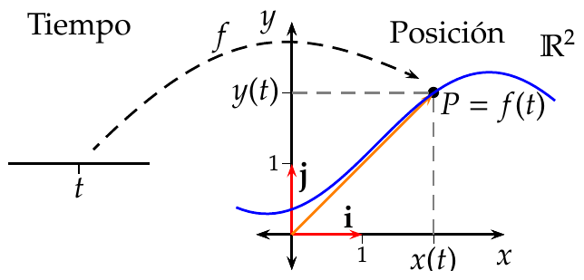
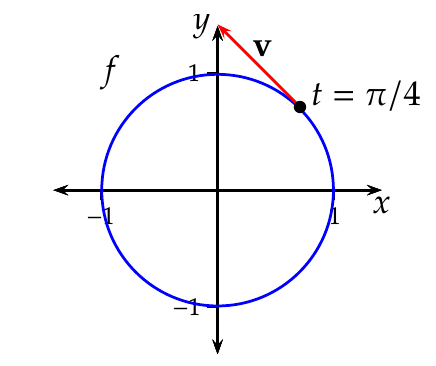
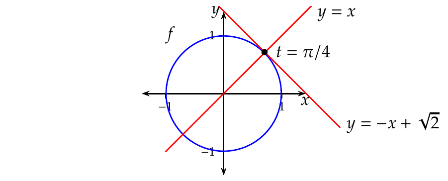
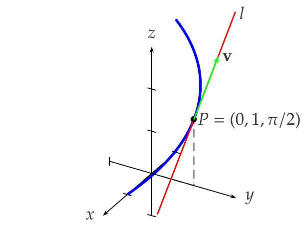

Análisis Matemático
Derivadas de funciones
Universidad CEU San Pablo
Incremento
Definición 1 (Incremento) Dada una función \(y=f(x)\), se llama incremento de \(f\) en un intervalo \([a,b]\) a la diferencia entre el valor de \(f\) en cada uno de los extremos del intervalo, y se nota
\[\Delta y= f(b)-f(a).\]
Cuando \(f\) es la función identidad \(y=x\), se cumple que
\[\Delta x=\Delta y= f(b)-f(a)=b-a,\]
y por tanto, el incremento de \(x\) en un intervalo es la amplitud del intervalo. Esto nos permite escribir el intervalo \([a,b]\) como \([a,a+\Delta x]\).
Tasa de variación media
Definición 2 (Tasa de variación media) Dada una función \(y=f(x)\), se llama tasa de variación media de \(f\) en el intervalo \([a,a+\Delta x]\), al cociente entre el incremento de \(y\) y el incremento de \(x\) en dicho intervalo, y se escribe
\[ \operatorname{TVM}(f,[a,a+\Delta x])=\frac{\Delta y}{\Delta x}=\frac{f(a+\Delta x)-f(a)}{\Delta x}. \]
Ejemplo 1 Consideremos la función \(y=x^2\) que mide el área de un cuadrado de chapa metálica de lado \(x\).
Si en un determinado instante el lado del cuadrado es \(a\), y sometemos la chapa a un proceso de calentamiento que aumenta el lado del cuadrado una cantidad \(\Delta x\), ¿en cuánto se incrementará el área del cuadrado?
\[\begin{align*} \Delta y &= f(a+\Delta x)-f(a)=(a+\Delta x)^2-a^2=\\ &= a^2+2a\Delta x+\Delta x^2-a^2=2a\Delta x+\Delta x^2. \end{align*}\]
¿Cuál será la tasa de variación media del área en el intervalo \([a,a+\Delta x]\)?
\[\operatorname{TVM}f[a,a+\Delta x]=\frac{\Delta y}{\Delta x}=\frac{2a\Delta x+\Delta x^2}{\Delta x}=2a+\Delta x.\]
Variación que experimenta el area de un cuadrado al variar el lado
Interpretación geométrica de la tasa de variación media
La tasa de variación media de \(f\) en el intervalo \([a,a+\Delta x]\) es la pendiente de la recta secante a \(f\) en los puntos \((a,f(a))\) y \((a+\Delta x,f(a+\Delta x))\).

Gráfica de la recta secante a una función en dos puntos.
Tasa de variación instantánea
En muchas ocasiones, es interesante estudiar la tasa de variación que experimenta una función, no en intervalo, sino en un punto.
Conocer la tendencia de variación de una función en un instante puede ayudarnos a predecir valores en instantes próximos.
Definición 3 (Tasa de variación instantánea y derivada) Dada una función \(y=f(x)\), se llama tasa de variación instantánea de \(f\) en un punto \(a\), al límite de la tasa de variación media de \(f\) en el intervalo \([a,a+\Delta x]\), cuando \(\Delta x\) tiende a 0, y se denota
\[\begin{align*} \operatorname{TVI}(f,a) &= \lim_{\Delta x\rightarrow 0} \operatorname{TVM}(f,[a,a+\Delta x])=\lim_{\Delta x\rightarrow 0}\frac{\Delta y}{\Delta x} = \\ &= \lim_{\Delta x\rightarrow 0}\frac{f(a+\Delta x)-f(a)}{\Delta x} \end{align*}\]
Cuando este límite existe, se dice que la función \(f\) es derivable en el punto \(a\), y al valor del mismo se le llama derivada de \(f\) en \(a\), y se nota como
\[ f'(a) \mbox{ o bien } \frac{df}{dx}(a) \]
Ejemplo 2 Consideremos de nuevo la función \(y=x^2\) que mide el área de un cuadrado de chapa metálica de lado \(x\).
Si en un determinado instante el lado del cuadrado es \(a\), y sometemos la chapa a un proceso de calentamiento que aumenta el lado del cuadrado, ¿cuál es la tasa de variación instantánea del área del cuadrado en dicho instante?
\[\begin{align*} \operatorname{TVI}(f(a)) &=\lim_{\Delta x\rightarrow 0}\frac{\Delta y}{\Delta x}=\lim_{\Delta x\rightarrow 0}\frac{f(a+\Delta x)-f(a)}{\Delta x} =\\ &=\lim_{\Delta x\rightarrow 0}\frac{2a\Delta x+\Delta x^2}{\Delta x}=\lim_{\Delta x\rightarrow 0} 2a+\Delta x= 2a. \end{align*}\]
Así pues, \(f'(a)=2a\), lo que indica que la tendencia de crecimiento el área es del doble del valor del lado.
El signo de \(f'(a)\) indica la tendencia de crecimiento de \(f\) en el punto \(a\):
- \(f'(a)>0\) indica que la tendencia es creciente.
- \(f'(a)<0\) indica que la tendencia es decreciente.
Interpretación geométrica de la tasa de variación instantánea
La tasa de variación instantánea de \(f\) en el punto \(a\) es la pendiente de la recta tangente a \(f\) en el punto \((a,f(a))\).

Gráfica de la recta tangente a una función en un punto.

Diferenciabilidad
Definición 4 (Función derivable) Dado un intervalo \(I\subseteq\mathbb{R}\), una función \(f:I\to\mathbb{R}\) y un punto \(a\in I\), se dice que \(f\) es diferenciable o derivable en \(a\), si existe el límite
\[ \lim_{x\to a}\frac{f(x)-f(a)}{x-a} \]
En tal caso, al valor del límite se le llama derivada de \(f\) en \(a\) y se denota \(f'(a)\).
Se dice que \(f\) es diferenciable en el intervalo \(I\), si \(f\) es diferenciable en todos los puntos de \(I\).
Si en la definición anterior llamamos \(h=x-a\), resulta
\[ f'(a)=\lim_{x\to a}\frac{f(x)-f(a)}{x-a}=\lim_{h\to 0}\frac{f(a+h)-f(a)}{h}, \] que es otra definición equivalente de la derivada de \(f\) en \(a\).
Definición 5 (Función derivada) Dado un intervalo \(I\subseteq\mathbb{R}\) y una función \(f:I\to\mathbb{R}\), se define la función derivada de \(f\), y se denota \(f'\), a la función cuyo dominio es el conjunto de los puntos de \(I\) donde \(f\) es diferenciable y el valor de \(f'\) es el valor de la derivada en cada uno de esos puntos.
La notación \(f'(a)\) para la derivada de \(f\) se debe a Lagrange, pero también es común en Ciencias e Ingenierías utilizar la notación de \(\frac{df}{dx}\) debida a Leibniz. En esta última notación \(df\) y \(dx\) se conocen como diferenciales de \(f\) y \(x\), y representan variaciones infinitesimales de \(f\) y \(x\) respectivamente.
Ejemplo 3 Sea \(f(x)=Id(x)=x\) la función identidad. Entonces, para cualquier \(a\in\mathbb{R}\), se tiene que
\[ \lim_{x\to a}\frac{f(x)-f(a)}{x-a} = \lim_{x\to a}\frac{x-a}{x-a} = \lim_{x\to a}1 = 1. \]
Por tanto, \(Id(x)\) es diferenciable en todo \(\mathbb{R}\) y \(Id'(a)=a\).
Con la notación de Leibniz, el cálculo de la derivada es, si cabe, más sencillo, pues se puede obtener algebraicamente,
\[ \frac{df}{dx} = \frac{dx}{dx} = 1. \]
Sea ahora \(f(x)=x^2\). Entonces, para cualquier \(a\in\mathbb{R}\), se tiene que
\[ \lim_{x\to a}\frac{f(x)-f(a)}{x-a} = \lim_{x\to a}\frac{x^2-a^2}{x-a} = \lim_{x\to a}\frac{(x-a)(x+a)}{x-a} = \lim_{x\to a}x+a = 2a. \]
Por tanto, \(f(x)\) es diferenciable en todo \(\mathbb{R}\) y \(f'(a)=2a\).
Ejemplo 4 Sea la función \(f(x)=|x|\). Veamos si \(f\) es diferenciable en \(0\). Para ello calculamos los límites laterales.
\[\begin{align*} \lim_{x\to 0^-}\frac{f(x)-f(0)}{x-0} &= \lim_{x\to 0^-} \frac{|x|}{x} = \lim_{x\to 0^-} \frac{-x}{x} = -1,\\ \lim_{x\to 0^+}\frac{f(x)-f(0)}{x-0} &= \lim_{x\to 0^+} \frac{|x|}{x} = \lim_{x\to 0^+} \frac{x}{x} = 1, \end{align*}\]
Por tanto, como los límites laterales no coinciden, \(f\) no es diferenciable en \(0\).
Recta tangente
Definición 6 (Recta tangente a la gráfica de una función) Dado un intervalo \(I\subseteq\mathbb{R}\), una función \(f:I\to\mathbb{R}\) y un punto \(a\in I\), si \(f\) es diferenciable en \(a\), se define la recta tangente a la gráfica de \(f\) en \(a\) como la recta que pasa por el punto \((a,f(a))\) con pendiente \(f'(a)\), es decir, la recta con ecuación
\[ y=f(a)+f'(a)(x-a) \]
Recta normal
Definición 7 (Recta normal a la gráfica de una función) Dado un intervalo \(I\subseteq\mathbb{R}\), una función \(f:I\to\mathbb{R}\) y un punto \(a\in I\), si \(f\) es diferenciable en \(a\), se define la recta normal a la gráfica de \(f\) en \(a\) como la recta que pasa por el punto \((a,f(a))\) y es perpendicular a la recta tangente a la gráfica de \(f\) en \(a\), es decir, la recta con ecuación
\[ y=f(a)-\frac{1}{f'(a)}(x-a) \]
Ejemplo 5 Dada la función \(y=f(x)=x^2\), la recta tangente a \(f\) en \(1\) es
\[ y = f(1)+f'(1)(x-1) = 1+2(x-1) = 2x-1, \]
y la recta normal es
\[ y = f(1)-\frac{1}{f'(1)}(x-1) = 1-\frac{1}{2}(x-1) = \frac{-x}{2}+\frac{3}{2}. \]
Teorema 1 Dado un intervalo \(I\subseteq\mathbb{R}\), una función \(f:I\to\mathbb{R}\) y un punto \(a\in I\), si \(f\) es diferenciable en \(a\) entonces \(f\) es continua en \(a\).
El recíproco de este teorema no es cierto, es decir, pueden existir funciones continuas en un punto que no sean derivables en ese punto, como por ejemplo la función \(f(x)=|x|\) que es continua en \(0\) pero, como se ha visto, no es derivable en \(0\).
Álgebra de derivadas
Proposición 1 Dado un intervalo \(I\subseteq \mathbb{R}\) y dos funciones \(f,g:I\to \mathbb{R}\), si \(f\) y \(g\) son diferenciables en \(a\in I\), entonces
\(f+g\) es diferenciable en \(a\) y \((f+g)'(a)=f'(a)+g'(a)\).
\(f-g\) es diferenciable en \(a\) y \((f-g)'(a)=f'(a)-g'(a)\).
\(c\cdot f\) es diferenciable en \(a\) y \((c\cdot f)'(a) = c\cdot f'(a)\) \(\forall c \in \mathbb{R}\).
\(f\cdot g\) es diferenciable en \(a\) y \((f\cdot g)'(a) = f'(a)g(a)+f(a)g'(a)\).
Si \(g(c)\neq 0\), \(\frac{f}{g}\) es diferenciable en \(a\) y \(\left(\dfrac{f}{g}\right)'(a)=\dfrac{f'(a)g(a)-f(a)g'(a)}{g(a)^2}\).
Ejemplo 6 Veamos cuál es la función derivada de la función racional \(f(x)=\dfrac{x^2-2x+1}{x}\).
\[\begin{align*} f'(x) &= \frac{(x^2-2x+1)'x-(x^2-2x+1)x'}{x^2} \\ &= \frac{((x^2)'-(2x)'+1')x-(x^2-2x+1)}{x^2} \\ &= \frac{(2x-2)x-(x^2-2x+1)}{x^2} \\ &= \frac{2x^2-2x-x^2+2x-1}{x^2} = \frac{x^2-1}{x^2} \forall x\neq 0. \end{align*}\]
Regla de la cadena
Teorema 2 (Regla de la cadena) Dados dos intervalos \(I,J\subseteq \mathbb{R}\) y dos funciones \(f:I\to \mathbb{R}\) y \(g:J\to\mathbb{R}\) tales que \(f(I)\subseteq J\), si \(f\) es diferenciable en en \(a\) y \(g\) es diferenciable en \(f(a)\), entonces \(g\circ f\) es diferenciable en \(a\) y \[ (g\circ f)'(a) = g'(f(a))f'(a). \]
Ejemplo 7 Si \(g(x)=\operatorname{sen}(x)\) y \(f(x)=x^2\), entonces \(g\circ f(x)=\operatorname{sen}(x^2)\) y, aplicando la regla de la cadena, su derivada vale
\[ (g\circ f)'(x)=g'(f(x))f'(x) = \cos(g(x)) 2x = \cos(x^2)2x. \]
Por otro lado, \(f\circ g(x)= (\sin(x))^2\) y, de nuevo aplicando la regla de la cadena, su derivada vale
\[ (f\circ g)'(x)=f'(g(z))g'(z) = 2g(x)\cos(x) = 2\operatorname{sen}(x)\cos(x). \]
Derivada de la función inversa
La regla de la cadena nos permite calcular la derivada de la función inversa de una función.
Teorema 3 (Derivada de la función inversa) Dado un intervalo \(I\subseteq \mathbb{R}\) y una función \(f:I\to \mathbb{R}\) continua e inyectiva en \(I\), y sea \(J=f(I)\) y \(f^{-1}:J\to\mathbb{R}\) la función inversa de \(f\). Si \(f\) es diferenciable en \(a\in I\) y \(f'(a)\neq 0\), entonces \(f^{-1}\) es diferenciable en \(f(a)\) y
\[ (f^{-1})'(f(a)) = \frac{1}{f'(a)}. \]
Corolario 1 Dado un intervalo \(I\subseteq\mathbb{R}\) y una función \(f:I\to\mathbb{R}\) inyectiva en \(I\), y sea \(J=f(I)\) y \(f^{-1}:J\to\mathbb{R}\) la función inversa de \(f\). Si \(f\) es derivable en \(I\) y \(f'(x)\neq 0\) \(\forall x\in I\), entonces \(f^{-1}\) es derivable en \(I\) y \(\forall y\in J\),
\[ (f^{-1})'(y) = \frac{1}{f'(f^{-1}(y))} \]
Ejemplo 8 La inversa de la función exponencial \(y=f(x)=e^x\) es el logaritmo neperiano \(x=f^{-1}(y)=\ln y\), de modo que, aplicando el teorema anterior, la función derivada del logaritmo es \[ \left(f^{-1}\right)'(y)=\frac{1}{f'(x)}=\frac{1}{e^x}=\frac{1}{e^{\ln y}}=\frac{1}{y}. \]
Ejemplo 9 Si \(n\in\mathbb{N}\) es par, la función \(f(x)=x^n\) \(\forall x\in \mathbb{R}^+\) es inyectiva y derivable, con \(f'(x)=nx^{n-1}>0\) \(\forall x\in\mathbb{R}^+\). Por tanto, la función \(f^{-1}(y)=\sqrt[n]{y}\) es derivable en \(\mathbb{R}^+\) y \(\forall y\in \mathbb{R}^+\),
\[\begin{align*} (f^{-1})'(y) &= \frac{1}{f'(f^{-1}(y))} = \frac{1}{f'(\sqrt[n]{y})} = \frac{1}{n(\sqrt[n]{y})^{n-1}} \\ &= \frac{1}{n (y^{1/n})^{n-1}} = \frac{1}{ny^{1-\frac{1}{n}}} = \frac{1}{n}y^{\frac{1}{n}-1}. \end{align*}\]
Por otro lado, si \(n\in\mathbb{N}\) es impar, la función \(f(x)=x^n\) \(\forall x\in\mathbb{R}\) es inyectiva y derivable, con \(f'(x)=nx^{n-1}\neq 0\) \(\forall x\neq 0\). Por tanto, la función \(f^{-1}(y)=\sqrt[n]{y}\) es derivable en \(\mathbb{R}\setminus\{0\}\) y, al igual que antes, \(\forall y\in \mathbb{R}^+\),
\[ (f^{-1})'(y) = \frac{1}{n}y^{\frac{1}{n}-1}. \]
Derivadas implícitas
Ejemplo 10 La función \(y=x^2\) también se puede expresar implícitamente mediante la ecuación \(y-x^2=0\).
El problema de la representación implícita es que no toda ecuación en \(x\) e \(y\) define una función. Por ejemplo, la ecuación \(y^2-x=0\) no define una función, ya que si se despeja \(y\) de la ecuación se obtiene \(y=\pm\sqrt{x}\), que no es una función ya que para cualquier valor de \(x>0\), \(y\) puede tomar dos valores, lo cual no está permitido en una función.
Dada una ecuación \(F(x,y)=0\), que define implícitamente \(y\) como función de \(x\), si \(y\) es derivable en un punto \((x_0, y_0)\), se puede calcular la derivada mediante el siguiente procedimiento:
Calcular la derivada de las expresiones de ambos lados de la ecuación. \(F'(x,y)=0\). En el cálculo de estas derivadas hay que tener en cuenta que \(y\) es una función que depende de \(x\) y aplicar la regla de la cadena para derivarla.
Reescribir la ecuación de manera que los términos donde aparezca \(y'\) queden a un lado de la ecuación y el resto al otro.
Sacar \(y'\) factor común en el lado de la ecuación donde aparezca.
Resolver la ecuación para \(y'\).
Sustituir \(x=x_0\), \(y=y_0\).
Ejemplo 11 Dada la ecuación \(e^y-x^2=0\) que define a \(y\) como función implícita de \(x\), veamos cómo calcular su derivada en el punto \((1,0)\) implícitamente
\[\begin{align*} (e^y-x^2)' = 0' &\Rightarrow e^yy'-2x = 0 \Rightarrow e^yy' = 2x \Rightarrow y' = \frac{2x}{e^y}. \end{align*}\]
Sustituyendo \(x=1\) e \(y=0\), se tiene \(y'(1) = \frac{2\dot 1}{e^0} = 2\).
En este caso, es posible obtener la representación explícita de la función, ya que \(e^y-x^2=0 \Rightarrow e^y=x^2 \Rightarrow y=\ln(x^2) = 2\ln(x)\). Si calculamos su derivada explícitamente, se tiene \(y'=\frac{2}{x}\), y para \(x=1\) se tiene \(y'(1) = \frac{2}{1}=2\), que coincide con el resultado anterior.
Aún cuando la ecuación \(F(x,y)=0\) no defina implícitamente a \(y\) como función de \(x\), es posible utiliza el procedimiento anterior para estudiar la tasa de variación instantánea de \(y\) con respecto a \(x\) en un punto \((x_0, y_0)\) que cumpla la ecuación.
Ejemplo 12 La ecuación \(x^2-xy+y^2=1\) no define a \(y\) como función explícita de \(x\), ya que para \(x=0\) se obtienen dos posibles valores de \(y\), \(0^2-0\cdot y+y^2=1 \Rightarrow y^2=1 \Rightarrow y=\pm 1\). No obstante, en el punto \((0,1)\), se puede calcular la tasa de variación instantánea de \(y\) con respecto a \(x\),
\[ \begin{gathered} (x^2-xy+y^2)' = 1' \Rightarrow (x^2)'-(xy)'+(y^2)' = 0 \\ \Rightarrow 2x -(1\cdot y+xy')+2yy' = 0 \Rightarrow 2x-y-xy'+2yy'=0 \\ \Rightarrow y'(-x+2y)=-2x+y \Rightarrow y'=\frac{-2x+y}{-x+2y}, \end{gathered} \]
y sustituyendo \(x=0\), \(y=1\) se tiene \(y'(0)=\frac{-2\cdot 0+1}{-0+2\cdot 1} = \frac{1}{2}\).
Si dibujamos la gráfica de los puntos que cumplen la ecuación, se puede comprobar que la recta tangente a la gráfica en el punto \((0,1)\) tiene pendiente \(1/2\).
Recta tangente a la curva implícita \(x^2-xy+y^2=1\) en el punto \((0,1)\).
Teorema del valor medio y aplicaciones
Teorema 4 (Extremo interior) Dado un intervalo \(I\subseteq \mathbb{R}\) y una función \(f:I\to\mathbb{R}\) con un extremo relativo en un punto interior \(a\in I\), si \(f\) es diferenciable en \(a\), entonces \(f'(a)=0\).
El resultado anterior no es cierto si el punto \(a\) no es interior de \(I\). Para verlo, basta considerar \(f(x)=x\) \(\forall x\in[0,1]\). Se observa que \(f\) tiene un máximo relativo en \(1\), pero \(f'(1)\neq 0\).
Corolario 2 Dado un intervalo \(I\subseteq \mathbb{R}\) y una función \(f:I\to\mathbb{R}\) con un extremo relativo en un punto \(a\in I\), entonces \(f'(a)\) no existe o \(f'(a)=0\).
Ejemplo 13 La función \(f(x)=|x|\) tiene un mínimo relativo en \(0\) que es un punto interior de \(\mathbb{R}\). Sin embargo, \(f'(0)\) no existe.
Definición 8 (Punto crítico) Dado un intervalo \(I\subseteq\mathbb{R}\) y una función \(f:I\to\mathbb{R}\), se dice que \(a\) es un punto crítico o punto singular de \(f\), si \(f'(a)=0\).
Gráficamente, los puntos críticos son puntos donde la tangente a la gráfica de la función es horizontal.
Teorema 5 (Rolle) Dada una función \(f:[a,b]\to\mathbb{R}\) continua en \([a,b]\) y diferenciable en \((a,b)\), si \(f(a)=f(b)\), entonces \(f\) tiene al menos un punto crítico en \((a,b)\), es decir, existe \(c\in(a,b)\) tal que \(f'(c)=0\).
Teorema 6 (Valor medio) Dada una función \(f:[a,b]\to\mathbb{R}\) continua en \([a,b]\) y diferenciable en \((a,b)\), entonces existe \(c\in (a,b)\) tal que
\[ f'(c) = \frac{f(b)-f(a)}{b-a}. \]
Estudio del crecimiento de una función
La principal aplicación de la derivada es el estudio del crecimiento de una función mediante el signo de la derivada.
Teorema 7 (Signo de la derivada) Dado un intervalo \(I\subseteq\mathbb{R}\) y una función \(f:I\to\mathbb{R}\) diferenciable en \(I\), entonces:
- \(f\) es creciente en \(I\) si y sólo si \(f'(x)\geq 0\) \(\forall x\in I\).
- \(f\) es decreciente en \(I\) si y sólo si \(f'(x)\leq 0\) \(\forall x\in I\).
Ejemplo 14 La función \(f(x)=x^3\) es creciente en todo \(\mathbb{R}\) ya que \(\forall x\in \mathbb{R}\ f'(x)\geq 0\).
Una función puede ser creciente o decreciente en un intervalo y no tener derivada.
Ejemplo 15 Consideremos la función \(f(x)=x^4-2x^2+1\). Su derivada \(f'(x)=4x^3-4x\) está definida en todo \(\mathbb{R}\) y es continua.

Determinación de los extremos relativos de una función
Como consecuencia del resultado anterior, la derivada también sirve para determinar los extremos relativos de una función.
Teorema 8 (Criterio de la primera derivada) Sea una función \(f:[a,b]\to\mathbb{R}\) continua en \([a,b]\) y derivable en \((a,c)\cup (c,b)\) para un punto \(c\in(a,b)\).
- Si existe un \(\delta>0\) tal que \((c-\delta, c+\delta)\subseteq[a,b]\) y \(f'(x)\geq 0\) y \(\forall x\in(c-\delta,c)\) y \(f'(x)\leq 0\) \(\forall x\in(c,c+\delta)\), entonces \(f\) tiene un máximo relativo en \(c\).
- Si existe un \(\delta>0\) tal que \((c-\delta, c+\delta)\subseteq[a,b]\) y \(f'(x)\leq 0\) y \(\forall x\in(c-\delta,c)\) y \(f'(x)\geq 0\) \(\forall x\in(c,c+\delta)\), entonces \(f\) tiene un mínimo relativo en \(c\).
Ejemplo 16 Consideremos de nuevo la función \(f(x)=x^4-2x^2+1\). Su derivada \(f'(x)=4x^3-4x\) está definida en todo \(\mathbb{R}\) y es continua.

El recíproco de las implicaciones del teorema anterior no tiene por qué ser cierto. Por ejemplo, la función
\[ f(x)= \begin{cases} 2x^4+x^4\operatorname{sen}\left(\frac{1}{x}\right) & \mbox{si } x\neq 0,\\ 0 & \mbox{si } x=0. \end{cases} \]
tiene un mínimo relativo y absoluto en \(x=0\), pero su derivada toma valores positivos y negativos en cualquier entorno de \(0\).
Teorema 9 (Darboux) Dada una función \(f:[a,b]\to\mathbb{R}\), si \(f\) es diferenciable en \([a,b]\) y \(f'(a)<k<f'(b)\), entonces existe \(c\in(a,b)\) tal que \(f'(c)=k\).
Determinación de los extremos absolutos de una función
Para encontrar los extremos absolutos de una función \(f\) derivable en \([a,b]\), basta con seguir el siguiente procedimiento:
- Calcular los puntos críticos de \(f\).
- Calcular los valores de \(f\) en los puntos críticos.
- Calcular el valor de \(f\) en los extremos del intervalo, \(a\) y \(b\).
- El máximo absoluto será el mayor de los valores obtenidos en los pasos 2 y 3, y el mínimo absoluto será el menor de los valores obtenidos en esos mismos pasos.
Ejemplo 17 Veamos cuáles son los extremos absolutos de la función \(f(x)=x^4-2x^2+1\) en el intervalo \([0,2]\). Seguiremos el procedimiento anterior para la determinación de los extremos absolutos.
En el Ejemplo 16 se vió que \(f\) tenía tres puntos críticos en \(-1\), \(0\) y \(1\). El punto crítico en \(-1\) se puede descartar al no pertenecer al intervalo \([0,2]\).
El valor de la función en los puntos críticos del intervalo \([0,2]\) son \(f(0)=1\) y \(f(1)=0\).
El valor de la función en los extremos del intervalo \([0,2]\) es \(f(0)=1\) y \(f(2)=9\).
El máximo absoluto de \(f\) en \([a,b]\) es \(\max\{f(0),f(1),f(2)\}=\max\{1,0,9\}=9\) y el mínimo absoluto es \(\min\{f(0),f(1),f(2)\}=\max\{1,0,9\}=0\).
Localización de raíces
Si una función \(g\) es la derivada de otra función \(f\), el teorema de Rolle nos asegura que entre dos raíces cualesquiera de \(f\) existe al menos una raíz de \(g\).
Ejemplo 18 La función \(g(x)=\cos(x)\) es la derivada de la función \(f(x)=\operatorname{sen}(x)\), de manera que, entre dos raíces cualesquiera de \(\operatorname{sen}(x)\) existe al menos una raíz de \(\cos(x)\).
Desigualdades
El teorema del valor medio se puede usar en la obtención de desigualdades tales como \(-x\leq \operatorname{sen}(x)\leq x\), donde la igualdad se da para \(x=0\) y la desigualdad se cumple para \(x>0\).
Ejemplo 19 Sea \(f(x)=\operatorname{sen}(x)\) cuya derivada es \(f'(x)=\cos(x)\) \(\forall x\in\mathbb{R}\). Aplicando el teorema del valor medio a \(f\) en el intervalo \([0,x]\) para \(x>0\), se tiene que \(\frac{\operatorname{sen}(x)-\operatorname{sen}(0)}{x-0} = \cos(c)\) para algún \(c\in(0,x)\). Como \(\operatorname{sen(0)}=0\) y \(-1\leq \cos(x)\leq 1\) \(\forall x\in \mathbb{R}\), se tiene \(\operatorname{sen}(x)=\cos(c)x\) para algún \(c\in(0,x)\), de lo que se deduce que \(-x\leq \operatorname{sen}(x)\leq x\).
Estimación de errores
Otra interesante aplicación es el cálculo aproximado del valor de una función en un punto \(c\in (a,b)\), si se conoce el valor de la función en \(a\) y \(b\).
Ejemplo 20 Veamos cómo calcular \(\sqrt{105}\) de manera aproximada. Para ello tomamos la función \(f(x)=\sqrt{x}\) que es derivable en todo \(\mathbb{R}\) con derivada \(f'(x)=\frac{1}{2\sqrt{x}}\). Aplicando el teorema del valor medio en el intervalo \([100, 105]\) se tiene que \(\frac{\sqrt{105}-\sqrt{100}}{105-100}=\frac{1}{2\sqrt{c}}\) para algún \(c\in(100,105)\).
Por otro lado, como \(f\) es creciente, se tiene que \(10=\sqrt{100}<\sqrt{c}<\sqrt{121}=11\). Así pues, se tiene
\[\begin{align*} \frac{\sqrt{105}-\sqrt{100}}{105-100}=\frac{1}{2\sqrt{c}} & \Rightarrow \sqrt{105}-10 = \frac{5}{2\sqrt{c}} \\ & \Rightarrow \frac{5}{2\cdot 11}< \sqrt{105}-10 < \frac{5}{2\cdot 10} \\ &\Rightarrow 10.22<\sqrt{105}<10.25. \end{align*}\]
Estudio de la concavidad de una función
Teorema 10 (Criterio de la segunda derivada) Dado un intervalo \(I\subseteq\mathbb{R}\) abierto y una función \(f:I\to\mathbb{R}\) dos veces diferenciable en \(I\). Entonces,
- \(f\) es cóncava hacia arriba en \(I\), si y sólo si, \(f''(x)\geq 0\) \(\forall x\in I\).
- \(f\) es cóncava hacia abajo en \(I\), si y sólo si, \(f''(x)\leq 0\) \(\forall x\in I\).
Ejemplo 21 La función \(f(x)=x^2\) tiene segunda derivada \(f''(x)=2>0\) y por tanto es cóncava en todo \(\mathbb{R}\).
Una función puede ser cóncava hacia arriba o hacia abajo en un intervalo y no tener derivada.
Ejemplo 22 Consideremos de nuevo la función \(f(x)=x^4-2x^2+1\). Su segunda derivada \(f''(x)=12x^2-4\) está definida en todo \(\mathbb{R}\) y es continua.

Cinemática: Movimiento rectilíneo
Cuando una función \(f(t)\) describe la posición de un objeto móvil sobre la recta real en el instante \(t\), tomando como referencia el origen de coordenadas \(O\) y el vector unitario \(\mathbf{i}=(1)\), se puede representar la posición \(P\) del móvil en cada instante \(t\) mediante un vector \(\vec{OP}=x\mathbf{i}\) donde \(x=f(t)\).
Interpretación cinemática del movimiento rectilíneo.
En este contexto, si se toman los instantes \(t=t_0\) y \(t=t_0+\Delta t\), ambos del dominio \(I\) de \(f\), el vector
\[\mathbf{v}_m=\frac{f(t_0+\Delta t)-f(t_0)}{\Delta t}\]
que se conoce como velocidad media del espacio recorrido por \(f\) entre los instantes \(t_0\) y \(t_0+\Delta t\).
Ejemplo 23 Un vehículo realiza un viaje de Madrid a Barcelona. Sea \(f(t)\) la función que da la posición el vehículo en cada instante \(t\). Si el vehículo parte de Madrid (km 0) a las 8 y llega a Barcelona (km 600) a las 14 horas, entonces la velocidad media del vehículo en el trayecto es
\[ \mathbf{v}_m=\frac{f(14)-f(8)}{14-8}=\frac{600-0}{6} = 100 \mbox{ km/h}. \]
Siguiendo en este mismo contexto del movimiento rectilíneo, la derivada de \(f\) en el instante \(t=t_0\) es el vector
\[ \mathbf{v}=f'(t_0)=\lim_{\Delta x\rightarrow 0}\frac{f(t_0+\Delta t)-f(t_0)}{\Delta t}, \]
que se conoce, siempre que exista el límite, como velocidad instantánea o simplemente la velocidad del espacio recorrido por \(f\) en el instante \(t_0\).
Es decir, la derivada de la posición respecto del tiempo, es un campo de vectores que recibe el nombre de velocidad a lo largo de la trayectoria \(f\).
Siguiendo con el ejemplo anterior, lo que marca el velocímetro en un determinado instante sería el módulo del vector velocidad en ese instante.
También tiene sentido pensar en \(f(t)\) como una función que mide otras magnitudes como por ejemplo la temperatura de un cuerpo, la concentración de un gas, la cantidad de un compuesto en una reacción química o el precio de las acciones de una compañía en cada instante \(t\).
Movimiento curvilíneo
La derivada como velocidad a lo largo de una trayectoria en la recta real puede generalizarse a trayectorias en cualquier espacio euclídeo \(\mathbb{R}^n\).
Para el caso del plano real \(\mathbb{R}^2\), si \(f(t)\) describe la posición de un objeto móvil en el plano en el instante \(t\), tomando como referencia el origen de coordenadas \(O\) y los vectores coordenados \(\{\mathbf{i}=(1,0),\mathbf{j}=(0,1)\}\), se puede representar la posición \(P\) del móvil en cada instante \(t\) mediante un vector \(\vec{OP}=x(t)\mathbf{i}+y(t)\mathbf{j}\) cuyas coordenadas
\[ \begin{cases} x=x(t)\\ y=y(t) \end{cases} \quad t\in I\subseteq \mathbb{R} \]
se conocen como funciones coordenadas de \(f\) y se escribe \(f(t)=(x(t),y(t))\).
Interpretación cinemática del movimiento curvilineo.
Velocidad en una trayectoria curvilínea en el plano
En este contexto de una trayectoria \(f(t)=(x(t),y(t))\) en el plano real \(\mathbb{R}^2\), para un instante \(t=t_0\), si existe el vector
\[ \mathbf{v} = \lim_{\Delta t\rightarrow 0} \frac{f(t_0+\Delta t)-f(t_0)}{\Delta t}, \]
entonces \(f\) es derivable en el instante \(t=t_0\) y el vector \(\mathbf{v}=f'(t_0)\) se conoce como velocidad de \(f\) en ese instante.
Como \(f(t)=(x(t),y(t))\),
\[\begin{align*} f'(t)&=\lim_{\Delta t\rightarrow 0} \frac{f(t_0+\Delta t)-f(t_0)}{\Delta t}\\ &= \lim_{\Delta t\rightarrow 0} \frac{(x(t_0+\Delta t),y(t_0+\Delta t))-(x(t_0),y(t_0))}{\Delta t} \\ &= \lim_{\Delta t\rightarrow 0} \left(\frac{x(t_0+\Delta t)-x(t_0)}{\Delta t},\frac{y(t_0+\Delta t)-y(t_0)}{\Delta t}\right) =\\ &= \left(\lim_{\Delta t\rightarrow 0}\frac{x(t_0+\Delta t)-x(t_0)}{\Delta t},\lim_{\Delta t\rightarrow 0}\frac{y(t_0+\Delta t)-y(t_0)}{\Delta t}\right) \\ &= (x'(t_0),y'(t_0)). \end{align*}\]
luego
\[ \mathbf{v} = x'(t_0)\mathbf{i}+y'(t_0)\mathbf{j}. \]
Ejemplo 24 Dada la trayectoria \(f(t) = (\cos(t),\operatorname{sen}(t))\), \(t\in \mathbb{R}\), cuya imagen es la circunferencia de centro el origen de coordenadas y radio 1, sus funciones coordenadas son \(x(t) = \cos(t)\), \(y(t) = \operatorname{sen}(t)\), \(t\in \mathbb{R}\), y su velocidad es
\[ \mathbf{v}=f'(t)=(x'(t),y'(t))=(-\operatorname{sen}(t), \cos(t). \]
En el instante \(t=\pi/4\), el móvil estará en la posición \(f(\pi/4) = (\cos(\pi/4),\operatorname{sen}(\pi/4)) =(\sqrt{2}/2,\sqrt{2}/2)\) y se moverá con una velocidad \(\mathbf{v}=f'(\pi/4)=(-\operatorname{sen}(\pi/4),\cos(\pi/4))=(-\sqrt{2}/2,\sqrt{2}/2)\).

Obsérvese que el módulo del vector velocidad siempre será 1 ya que \(\lvert \mathbf{v}\rvert = \sqrt{(-\operatorname{sen}(t))^2+(\cos(t))^2}=1\).
Recta tangente a una trayectoria en el plano
Los vectores paralelos a la velocidad \(\mathbf{v}\) se denominan vectores tangentes a la trayectoria \(f\) en el instante \(t=t_0\), y la recta que pasa por \(P=f(t_0)\) dirigida por \(\mathbf{v}\) es la recta tangente a \(f\) cuando \(t=t_0\).
Definición 9 (Recta tangente a una trayectoria) Dada una trayectoria \(f\) sobre el plano real \(\mathbb{R}^2\), se llama recta tangente a \(f\) en \(t=t_0\) a la recta de ecuación
\[\begin{align*} l: (x,y)&= f(t_0)+tf'(t_0) = (x(t_0),y(t_0))+t(x'(t_0),y'(t_0))\\ &= (x(t_0)+tx'(t_0),y(t_0)+ty'(t_0)). \end{align*}\]
Ejemplo 25 Se ha visto que para la trayectoria \(f(t) = (\cos(t),\operatorname{sen}(t))\), \(t\in \mathbb{R}\), cuya imagen es la circunferencia de centro el origen de coordenadas y radio 1, en el instante \(t=\pi/4\) la posición del móvil era \(f(\pi/4)=(\sqrt{2}/2,\sqrt{2}/2)\) y su velocidad \(\mathbf{v}=(-\sqrt{2}/2,\sqrt{2}/2)\), de modo que la recta tangente a \(f\) en ese instante es
\[\begin{align*} l &: X=f(\pi/2)+t\mathbf{v} = \left(\frac{\sqrt{2}}{2},\frac{\sqrt{2}}{2}\right)+t\left(\frac{-\sqrt{2}}{2},\frac{\sqrt{2}}{2}\right) \\ &= \left(\frac{\sqrt{2}}{2}-t\frac{\sqrt{2}}{2},\frac{\sqrt{2}}{2}+t\frac{\sqrt{2}}{2}\right). \end{align*}\]
De la ecuación vectorial de la recta tangente a \(f\) para \(t=t_0\), se obtiene que sus funciones cartesianas son
\[ s\begin{cases} x=x(t_0)+tx'(t_0)\\ y=y(t_0)+ty'(t_0) \end{cases} \quad t\in \mathbb{R}, \]
y despejando \(t\) en ambas ecuaciones e igualando se llega a la ecuación cartesiana de la recta tangente
\[ \frac{x-x(t_0)}{x'(t_0)}=\frac{y-y(t_0)}{y'(t_0)}, \]
si \(x'(t_0)\neq 0\) e \(y'(t_0)\neq 0\), y de ahí a la ecuación en la forma punto-pendiente
\[ y-y(t_0)=\frac{y'(t_0)}{x'(t_0)}(x-x(t_0)). \]
Partiendo de la ecuación vectorial de la tangente del ejemplo anterior \(l=\left(\frac{\sqrt{2}}{2}-t\frac{\sqrt{2}}{2},\frac{\sqrt{2}}{2}+t\frac{\sqrt{2}}{2}\right)\), su ecuación cartesiana es
\[ \begin{gathered} \frac{x-\sqrt{2}/2}{-\sqrt{2}/2} = \frac{y-\sqrt{2}/2}{\sqrt{2}/2}\Rightarrow\\ y-\sqrt{2}/2 = \frac{-\sqrt{2}/2}{\sqrt{2}/2}(x-\sqrt{2}/2) \Rightarrow \\ y=-x+\sqrt{2}. \end{gathered} \]
Recta normal a una trayectoria en el plano
Definición 10 (Recta normal a una trayectoria) Dada una trayectoria \(f\) sobre el plano real \(\mathbb{R}^2\), se llama recta normal a \(f\) en \(t=t_0\) a la recta de ecuación
\[\begin{align*} l: (x,y) &= (x(t_0),y(t_0))+t(y'(t_0),-x'(t_0)) =\\ &= (x(t_0)+ty'(t_0),y(t_0)-tx'(t_0)). \end{align*}\]
Su ecuación cartesiana es
\[ \frac{x-x(t_0)}{y'(t_0)} = \frac{y-y(t_0)}{-x'(t_0)}, \]
y su ecuación en la forma punto pendiente
\[ y-y(t_0) = \frac{-x'(t_0)}{y'(t_0)}(x-x(t_0)). \]
La recta normal es perpendicular a la recta tangente ya que sus vectores directores son ortogonales.
Ejemplo 26 Siguiendo con el ejemplo de la trayectoria \(f(t) = (\cos(t),\operatorname{sen}(t))\), \(t\in \mathbb{R}\), la recta normal en el instante \(t=\pi/4\) es
\[\begin{align*} l&: (x,y)=(\cos(\pi/2),\operatorname{sen}(\pi/2))+t(\cos(\pi/2),\operatorname{sen}(\pi/2)) =\\ & \left(\frac{\sqrt{2}}{2},\frac{\sqrt{2}}{2}\right)+t\left(\frac{\sqrt{2}}{2},\frac{\sqrt{2}}{2}\right) =\left(\frac{\sqrt{2}}{2}+t\frac{\sqrt{2}}{2},\frac{\sqrt{2}}{2}+t\frac{\sqrt{2}}{2}\right), \end{align*}\]
y su ecuación cartesiana es
\[ \frac{x-\sqrt{2}/2}{\sqrt{2}/2} = \frac{y-\sqrt{2}/2}{\sqrt{2}/2}\Rightarrow y-\sqrt{2}/2 = \frac{\sqrt{2}/2}{\sqrt{2}/2}(x-\sqrt{2}/2) \Rightarrow y=x. \]

Rectas tangente y normal a una función
Un caso particular de las recta tangente y normal a una trayectoria son la recta tangente y normal a una función de una variable real. Si se tiene la función \(y=f(x)\), \(x\in I\subseteq \mathbb{R}\), una trayectoria que traza la gráfica de \(f\) es \(g(t) = (t,f(t)) \quad t\in I,\) y su velocidad es \(g'(t) = (1,f'(t)),\) de modo que la recta tangente para \(t=a\) es
\[ \frac{x-a}{1} = \frac{y-f(a)}{f'(a)} \Rightarrow y-f(a) = f'(a)(x-a), \]
y la recta normal es
\[ \frac{x-a}{f'(a)} = \frac{y-f(a)}{-1} \Rightarrow y-f(a) = \frac{-1}{f'(a)}(x-a), \]
Ejemplo 27 Dada la función \(y=f(x)=x^2\), la trayectoria que dibuja la gráfica de esta función es \(g(t)=(t,t^2)\) y su velocidad es \(g'(t)=(1,2t)\), de modo que en el punto \((1,1)\), que se alcanza en el instante \(t=1\), la recta tangente es
\[ \frac{x-1}{1} = \frac{y-1}{2} \Rightarrow y-1 = 2(x-1) \Rightarrow y = 2x-1, \]
y la recta normal es
\[ \frac{x-1}{2} = \frac{y-1}{-1} \Rightarrow y-1 = \frac{-1}{2}(x-1) \Rightarrow y = \frac{-x}{2}+\frac{3}{2}. \]
Recta tangente a una trayectoria en el espacio
El concepto de recta tangente a una trayectoria en el plano real puede extenderse fácilmente a trayectorias en el espacio real \(\mathbb{R}^3\).
Si \(f(t)=(x(t),y(t),z(t))\), \(t\in I\subseteq \mathbb{R}\), es una trayectoria en el espacio real \(\mathbb{R}^3\), entonces el móvil que recorre esta trayectoria en el instante \(t=t_0\), ocupará la posición \(P=(x(t_0),y(t_0),z(t_0))\) y tendrá una velocidad \(\mathbf{v}=f'(t)=(x'(t),y'(t),z'(t))\), de manera que la recta tangente a \(f\) en ese instante será
\[\begin{align*} l&: (x,y,z)=(x(t_0),y(t_0),z(t_0))+t(x'(t_0),y'(t_0),z'(t_0)) =\\ &= (x(t_0)+tx'(t_0),y(t_0)+ty'(t_0),z(t_0)+tz'(t_0)), \end{align*}\]
cuyas ecuaciones cartesianas son
\[ \frac{x-x(t_0)}{x'(t_0)}=\frac{y-y(t_0)}{y'(t_0)}=\frac{z-z(t_0)}{z'(t_0)}, \]
siempre que \(x'(t_0)\neq 0\), \(y'(t_0)\neq 0\) y \(z'(t_0)\neq 0\).
Ejemplo 28 Dada la trayectoria del espacio \(f(t)=(\cos(t), \operatorname{sen}(t), t)\), \(t\in \mathbb{R}\), en el instante \(t=\pi/2\), la trayectoria pasará por el punto
\[ f(\pi/2)=(\cos(\pi/2),\operatorname{sen}(\pi/2),\pi/2)=(0,1,\pi/2), \]
con una velocidad
\[ \mathbf{v}=f'(\pi/2)=(-\operatorname{sen}(\pi/2),\cos(\pi/2), 1)=(-1,0,1), \]
y la tangente en ese punto es
\[ l:(x,y,z)=(0,1,\pi/2)+t(-1,0,1) = (-t,1,t+\pi/2). \]

Polinomios de Taylor
Una aplicación muy útil de la derivada es la aproximación de funciones mediante polinomios.
Los polinomios son funciones sencillas de calcular (mediante sumas y productos), que tienen muy buenas propiedades:
- Están definidos en todos los números reales.
- Son funciones continuas.
- Son derivables hasta cualquier orden y sus derivadas son continuas.
En esta sección veremos cómo aproximar una función \(f(x)\) mediante un polinomio \(p(x)\) cerca de un valor \(x=a\).
Aproximación mediante un polinomio de grado 0
Un polinomio de grado 0 tiene ecuación \[p(x) = c_0,\] donde \(c_0\) es una constante.
Como el polinomio debe valer lo que la función en el punto \(a\), debe cumplir
\[ p(a) = c_0 = f(a). \]
En consecuencia, el polinomio de grado 0 que mejor aproxima a \(f\) en un entorno de \(a\) es
\[ p(x) = f(a). \]
Gráfica del polinomio de Taylor de grado 0
Aproximación mediante un polinomio de grado 1
Un polinomio de grado 1 es una recta y tiene ecuación
\[ p(x) = c_0+c_1x, \]
aunque también puede escribirse
\[ p(x) = c_0+c_1(x-a). \]
De entre todos los polinomios de grado 1, el que mejor aproxima a \(f\) en entorno de \(a\) será el que cumpla las dos condiciones siguientes:
- \(p\) y \(f\) valen lo mismo en \(a\): \(p(a) = f(a)\),
- \(p\) y \(f\) tienen la misma tasa de crecimiento en \(a\): \(p'(a) = f'(a)\).
Esta última condición nos asegura que en un entorno de \(a\), \(p\) y \(f\) tienen aproximadamente la misma tendencia de crecimiento, pero requiere que la función \(f\) sea derivable en \(a\).
Imponiendo las condiciones anteriores tenemos
- \(p(x)=c_0+c_1(x-a) \Rightarrow p(a)=c_0+c_1(a-a)=c_0=f(a)\),
- \(p'(x)=c_1 \Rightarrow p'(a)=c_1=f'(a)\).
Así pues, el polinomio de grado 1 que mejor aproxima a \(f\) en un entorno de \(a\) es
\[ p(x) = f(a)+f '(a)(x-a), \]
que resulta ser la recta tangente a \(f\) en el punto \((a,f(a))\).
Gráfica del polinomio de Taylor de grado 1
Aproximación mediante un polinomio de grado 2
Un polinomio de grado 2 es una parábola y tiene ecuación
\[ p(x) = c_0+c_1x+c_2x^2, \]
aunque también puede escribirse
\[ p(x) = c_0+c_1(x-a)+c_2(x-a)^2. \]
De entre todos los polinomio de grado 2, el que mejor aproxima a \(f\) en entorno de \(a\) será el que cumpla las tres condiciones siguientes:
- \(p\) y \(f\) valen lo mismo en \(a\): \(p(a) = f(a)\),
- \(p\) y \(f\) tienen la misma tasa de crecimiento en \(a\): \(p'(a) = f'(a)\).
- \(p\) y \(f\) tienen la misma curvatura en \(a\): \(p''(a)=f''(a)\).
Esta última condición requiere que la función \(f\) sea dos veces derivable en \(a\).
Imponiendo las condiciones anteriores tenemos
- \(p(x)=c_0+c_1(x-a)+c_2(x-a)^2 \Rightarrow p(a)=c_0=f(a)\),
- \(p'(x)=c_1+2c_2(x-a) \Rightarrow p'(a)=c_1+2c_2(a-a)=c_1=f'(a)\),
- \(p''(x)=2c_2 \Rightarrow p''(a)=2c_2=f''(a) \Rightarrow c_2=\frac{f''(a)}{2}\).
Así pues, el polinomio de grado 2 que mejor aproxima a \(f\) en un entorno de \(a\) es
\[ p(x) = f(a)+f'(a)(x-a)+\frac{f''(a)}{2}(x-a)^2. \]
Gráfica del polinomio de Taylor de grado 2
Aproximación mediante un polinomio de grado \(n\)
Un polinomio de grado \(n\) tiene ecuación
\[ p(x) = c_0+c_1x+c_2x^2+\cdots +c_nx^n, \]
aunque también puede escribirse
\[ p(x) = c_0+c_1(x-a)+c_2(x-a)^2+\cdots +c_n(x-a)^n. \]
De entre todos los polinomio de grado \(n\), el que mejor aproxima a \(f\) en entorno de \(a\) será el que cumpla las \(n+1\) condiciones siguientes:
- \(p(a) = f(a)\),
- \(p'(a) = f'(a)\),
- \(p''(a)=f''(a)\),
- \(\cdots\)
- \(p^{(n}(a)=f^{(n}(a)\).
Las sucesivas derivadas de \(p\) valen
\[\begin{align*} p(x) &= c_0+c_1(x-a)+c_2(x-a)^2+\cdots +c_n(x-a)^n,\\ p'(x) &= c_1+2c_2(x-a)+\cdots +nc_n(x-a)^{n-1},\\ p''(x) &= 2c_2+\cdots +n(n-1)c_n(x-a)^{n-2},\\ \vdots\\ p^{(n}(x) &= n(n-1)(n-2)\cdots 1c_n = n!c_n. \end{align*}\]
Imponiendo las condiciones anteriores se tiene
- \(p(a) = c_0+c_1(a-a)+c_2(a-a)^2+\cdots +c_n(a-a)^n=c_0=f(a),\)
- \(p'(a) = c_1+2c_2(a-a)+\cdots +nc_n(a-a)^{n-1}=c_1=f'(a),\)
- \(p''(a) = 2c_2+\cdots +n(n-1)c_n(a-a)^{n-2}=2c_2=f''(a)\Rightarrow c_2=\frac{f''(a)}{2},\)
- \(\cdots\)
- \(p^{(n}(a)=n!c_n=f^{(n}(a)=c_n=\frac{f^{(n}(a)}{n!}\).
Definición 11 (Polinomio de Taylor de orden \(n\) para \(f\) en el punto \(a\)) Dada una función \(f\), \(n\) veces derivable en \(x=a\), se define el polinomio de Taylor de orden \(n\) para \(f\) en \(a\) como
\[\begin{align*} p_{f,a}^n(x)&=f(a)+f'(a)(x-a)+\frac{f''(a)}{2}(x-a)^2+\cdots +\frac{f^{(n}(a)}{n!}(x-a)^n \\ &=\sum_{i=0}^{n}\frac{f^{(i}(a)}{i!}(x-a)^i, \end{align*}\]
o bien, escribiendo \(x=a+h\)
\[\begin{align*} p_f^n(a+h) &= f(a)+f'(a)h+\frac{f''(a)}{2}h^2+\cdots +\frac{f^{(n}(a)}{n!}h^n \\ &= \sum_{i=0}^{n}\frac{f^{(i}(a)}{i!}h^i. \end{align*}\]
El polinomio de Taylor de orden \(n\) para \(f\) en \(a\) es el polinomio de orden \(n\) que mejor aproxima a \(f\) alrededor de \(a\), ya que es el único que cumple las \(n+1\) condiciones anteriores.
Ejemplo 29 Vamos a aproximar la función \(f(x)=\log x\) en un entorno del punto \(1\) mediante un polinomio de grado \(3\).
La ecuación del polinomio de Taylor de orden \(3\) para \(f\) en el punto \(1\) es
\[ p_{f,1}^3(x)=f(1)+f'(1)(x-1)+\frac{f''(1)}{2}(x-1)^2+\frac{f'''(1)}{3!}(x-1)^3. \]
Calculamos las tres primeras derivadas de \(f\) en \(1\):
\[ \begin{array}{lll} f(x)=\log x & \quad & f(1)=\log 1 =0,\\ f'(x)=1/x & & f'(1)=1/1=1,\\ f''(x)=-1/x^2 & & f''(1)=-1/1^2=-1,\\ f'''(x)=2/x^3 & & f'''(1)=2/1^3=2. \end{array} \]
Sustituyendo en la ecuación del polinomio se tiene
\[\begin{align*} p_{f,1}^3(x) &= 0+1(x-1)+\frac{-1}{2}(x-1)^2+\frac{2}{3!}(x-1)^3 \\ &= \frac{2}{3}x^3-\frac{3}{2}x^2+3x-\frac{11}{6}. \end{align*}\]
Gráfica del polinomio de Taylor del logaritmo
Polinomio de Maclaurin de orden \(n\)
La ecuación del polinomio de Taylor se simplifica cuando el punto en torno al cual queremos aproximar es el \(0\).
Definición 12 (Polinomio de Maclaurin de orden \(n\) para \(f\)) Dada una función \(f\), \(n\) veces derivable en \(0\), se define el polinomio de Maclaurin de orden \(n\) para \(f\) como
\[\begin{align*} p_{f,0}^n(x) &= f(0)+f'(0)x+\frac{f''(0)}{2}x^2+\cdots +\frac{f^{(n}(0)}{n!}x^n =\\ &= \sum_{i=0}^{n}\frac{f^{(i}(0)}{i!}x^i. \end{align*}\]
Ejemplo 30 Vamos a aproximar la función \(f(x)=\operatorname{sen} x\) en un entorno del punto \(0\) mediante un polinomio de grado \(3\).
La ecuación del polinomio de Maclaurin de orden \(3\) para \(f\) es
\[ p_{f,0}^3(x)=f(0)+f'(0)x+\frac{f''(0)}{2}x^2+\frac{f'''(0)}{3!}x^3. \]
Calculamos las tres primeras derivadas de \(f\) en \(0\):
\[ \begin{array}{lll} f(x)=\operatorname{sen} x & \quad & f(0)=\operatorname{sen} 0 =0,\\ f'(x)=\cos x & & f'(0)=\cos 0=1,\\ f''(x)=-\operatorname{sen} x & & f''(0)=-\operatorname{sen} 0=0,\\ f'''(x)=-\cos x & & f'''(0)=-\cos 0=-1. \end{array} \]
Sustituyendo en la ecuación del polinomio obtenemos
\[ p_{f,0}^3(x)=0+1\cdot x+\frac{0}{2}x^2+\frac{-1}{3!}x^3= x-\frac{x^3}{6}. \]
Gráfica del polinomio de Maclaurin del seno
Polinomios de Maclaurin de funciones elementales
| \(f(x)\) | \(p_{f,0}^n(x)\) |
|---|---|
| \(e^x\) | \(\displaystyle 1 + x + \frac{x^2}{2!} + \frac{x^3}{3!} + \cdots + \frac{x^n}{n!} = \sum_{i=0}^n \frac{x^i}{i!}\) |
| \(\log(1+x)\) | \(\displaystyle x-\frac{x^2}{2}+\frac{x^3}{3}-\cdots +(-1)^{n-1}\frac{x^n}{n} = \sum_{i=0}^n (-1)^{i-1}\frac{x^i}{i}\) |
| \(\operatorname{sen}(x)\) | \(\displaystyle x-\frac{x^3}{3!}+\frac{x^5}{5!}-\cdots +(-1)^k\frac{x^{2k-1}}{(2k-1)!} = \sum_{i=0}^k (-1)^i\frac{x^{2i-1}}{(2i-1)!}\) si \(n=2k\) o \(n=2k-1\) |
| \(\cos(x)\) | \(\displaystyle 1-\frac{x^2}{2!}+\frac{x^4}{4!}-\cdots +(-1)^k\frac{x^{2k}}{(2k)!} = \sum_{i=0}^k (-1)^i\frac{x^{2i}}{(2i)!}\) si \(n=2k\) o \(n=2k+1\) |
| \(\operatorname{arctg}(x)\) | \(\displaystyle x-\frac{x^3}{3}+\frac{x^5}{5}-\cdots +(-1)^k\frac{x^{2k-1}}{(2k-1)} = \sum_{i=0}^k (-1)^i\frac{x^{2i-1}}{(2i-1)}\) si \(n=2k\) o \(n=2k-1\) |
Resto de Taylor
Los polinomios de Taylor permiten calcular el valor aproximado de una función cerca de un valor \(a\), pero siempre se comete un error en dicha aproximación.
Definición 13 (Resto de Taylor) Si \(f\) es una función para la que existe el su polinomio de Taylor de orden \(n\) en \(a\), \(p_{f,a}^n\), entonces se define el resto de Taylor de orden \(n\) para \(f\) en \(a\) como
\[ r_{f,a}^n(x)=f(x)-p_{f,a}^n(x). \]
El resto mide el error cometido al aproximar \(f(x)\) mediante \(p_{f,a}^n(x)\) y permite expresar la función \(f\) como la suma de un polinomio de Taylor más su resto correspondiente:
\[ f(x)=p_{f,a}^n(x) + r_{f,a}^n(x). \]
Esta expresión se conoce como fórmula de Taylor de orden \(n\) para \(f\) en \(a\). Se pude demostrar, además, que
\[ \lim_{h\rightarrow 0}\frac{r_{f,a}^n(a+h)}{h^n}=0, \]
lo cual indica que el resto \(r_{f,a}^n(a+h)\) es mucho menor que \(h^n\).
Teorema 11 (Forma de Lagrange del resto de Taylor) Si \(f\) es una función tal que \(f^{(n+1}(t)\) es continua en un intervalo que incluye a \(a\) y \(x\), entonces
\[ R^n_{f,a}(x)=\frac{f^{(n+1}(c)}{(n+1)!}(x-a)^{n+1} \]
para algún \(c\) entre \(a\) y \(x\).
La forma de Lagrange del resto de Taylor permite, en muchas ocasiones, dar una cota de las aproximaciones realizadas mediante un polinomio de Taylor.
Ejemplo 31 Dada la función \(f(x)=\cos(x)\) el polinomio de MacLaurin de cuarto grado de \(f\) es
\[ P^4_{f,0}(x)=1-\frac{x^2}{2}+\frac{x^4}{4!}. \]
Sustituyendo en \(x=0.1\) se tiene que \(\cos(0.1)\approx P^2_{f,0}(0.1) = 1-\frac{0.1^2}{2}+\frac{0.1^4}{4!}= 0.9950041667\).
Para obtener una cota del error cometido, aplicando el teorema anterior se tiene que
\[ R^4_{f,0}(0.1)=\frac{f^{5}(c)}{5!}0.1^5 = \frac{-\operatorname{sen}(c)}{5!}0.1^5 \mbox{ con }c\in [0,0.1]. \]
Como \(|\operatorname{sen}(x)|\leq 1\) \(\forall x\in\mathbb{R}\), se tiene que
\[ |R^4_{f,0}(0.1)|\leq \frac{0.1^5}{5!} = 8.3\cdot 10^{-8}, \]
que es una cota del error cometido en la aproximación.